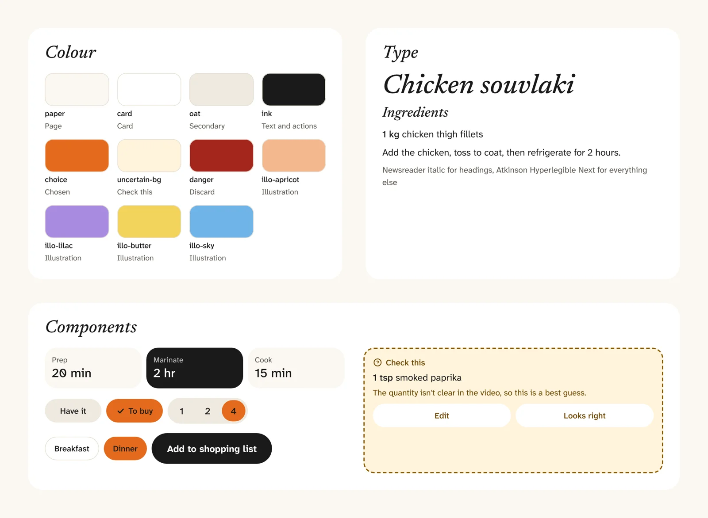
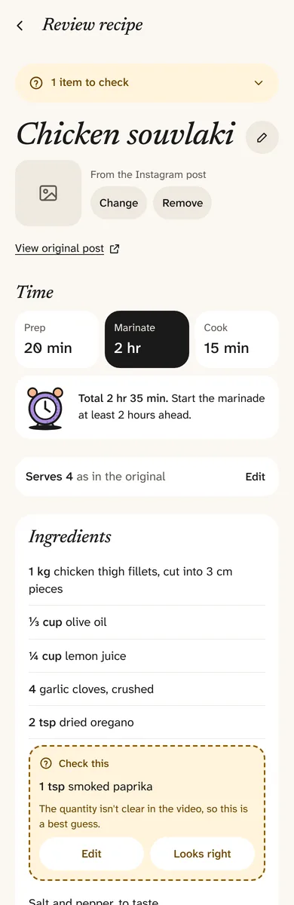
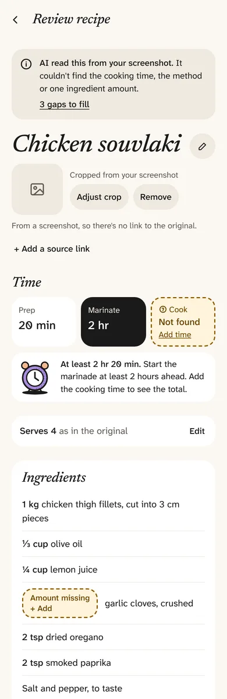
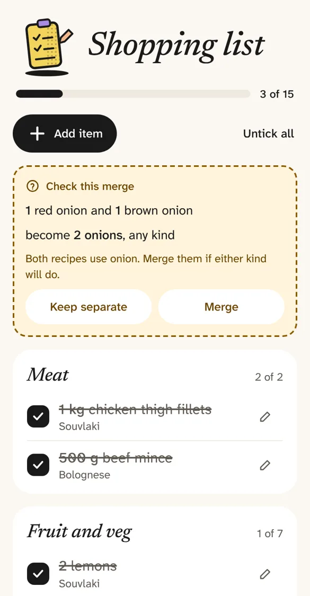
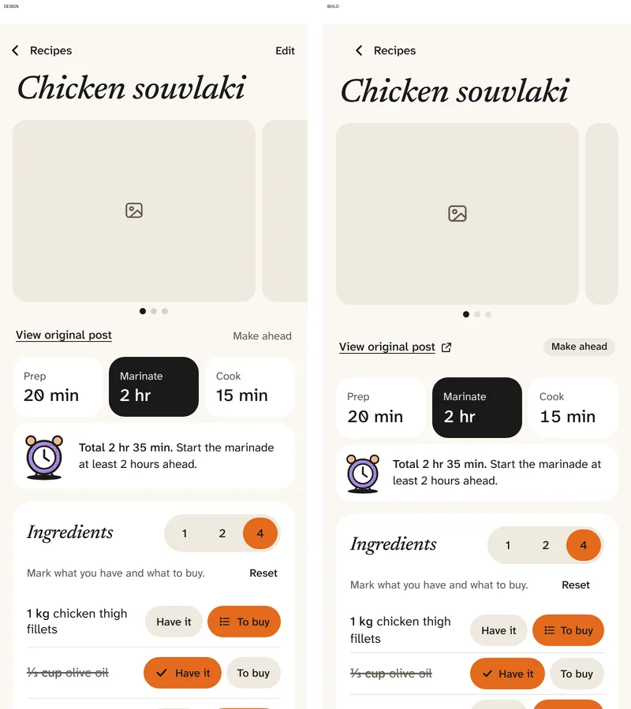

A recipe app designed and built in close collaboration with AI, for a problem I actually have, working in short loops of brief, design, build and test. I’ve spent my career designing for the broader population but this was an opportunity to make something that works for me as the primary user!
Role Designer, product owner and QA
Tools Claude, Claude Design, Claude Code, Miro, Figma, Lovable
Built with React, GitHub, Vercel, Supabase, Anthropic API
I have a large number of recipes saved across Instagram, Facebook, Notion and the web. I often can't remember where something is, or end up searching again for a recipe I've cooked before. Online recipes bury the method under long introductions and ads, marinating time often catches me out, and shopping happens across the supermarket, the grocer or the butcher, so one long list in Notes doesn't cut it.
I wanted one place to keep every recipe in a clean, consistent format, see at a glance how long it takes, scale it for four or for one, and turn my choices into a shopping list grouped into the way I shop.
It was also a deliberate test. I wanted to explore first-hand how far a designer can take an idea with AI, from research to a live product, and where human judgement still has a role.
Research and definition
I started the way I would with any client: an audit of how I find, save, shop for and cook recipes, a journey map, and a problem statement. Everything lived on a Miro board that became the source of truth for the whole project. Requirements, flows, decisions and tool notes all went there, so nothing was decided only in a chat window.
Four principles came out of it and steered every later decision:
Straight to the recipe. A clean, consistent format with no preamble.
Time up front. Prep, marinating and cooking visible before you commit.
Made for the kitchen. The screen stays on, and ingredients and steps are easy to tick off with messy hands.
AI drafts, I confirm. Anything AI extracts is clearly shown and easy to correct.
Cook mode wasn't in my first scope. It came straight from the research. Bulk import from Notion went the other way: 40 recipes is few enough to add one at a time.
I didn't realise it needed marinating. Have I added the garlic yet?
From my own journey map, the moment cook mode was born
How I worked with AI
I gave each tool one job and kept myself in the middle. AI produced the screens, the design system and the code, but every brief, decision and review came from me. When two tools needed to talk, I was the go-between, which kept me in control of what got designed and built.
Early on I gave the same brief to Claude Design, Figma Make, Lovable and Miro's AI, then built the app in both Lovable and Claude to compare. The tools that had the reasoning behind the design produced the most coherent results, so I settled on one tool per job. Two requirements and one of Lovable's ideas, splitting quantity and unit, came out of that comparison.
A design system as the single source
I set the look first, working through a range of inspirations to arrive at a concept: ink on warm paper, an italic serif for headings and highly legible type for everything else, with colour kept for illustrations and meaning. That became a design system of 16 colour tokens, 9 type styles, spacing, radii and 20 documented components.
It lives in three places that stay in step:
Claude Design, where the tokens, guidance and component previews are documented.
Figma, as variables, text styles and components, built and updated through Figma's connector rather than by hand.
The code, where the app's theme is read straight from the same tokens file, so a colour change in the system is a colour change in the product.
Every colour has one job. Amber only ever means "the AI wants you to check this". Orange shows what you've chosen. Ink is for actions and anything done. Each choice is checked against WCAG 2.2 AA, which dictated many colour decisions.

Colour, type and components from the design system
Designing for AI uncertainty
The core of the app is capture: paste a link or some text, or add screenshots, and AI turns it into a tidy recipe. AI gets things wrong, so the design had to make its uncertainty visible without making the user feel they're filling in a form.
One reserved colour. Amber, with a dashed outline and a question mark, means "the AI wants you to look at this". Nothing else in the app uses it, and it never relies on colour alone.
Uncertain is different from missing. A guessed amount gets Edit and Looks right. A missing one gets Add, because there's nothing to accept. This came out of the tool comparison.
Gaps never block saving. Lovable stopped me saving a half-read recipe, which felt wrong in practice. Incomplete recipes save, and stay flagged until I finish them.
The AI never invents. It's told never to make up amounts, times or steps, and to say why it isn't sure.


Reviewing a capture, and a capture that only partly worked
Decisions AI didn't make
The most useful thing I brought wasn't screens, it was judgement. A few examples:
Shop in packs. You can't buy 2 tablespoons of miso, so the list shows 1 jar, with AI suggesting the pack size.
Lighter type. Both test builds felt heavy, so I moved to a font with a true medium weight.
Colour that passes. Orange for choices, with dark text, because white failed contrast.
Public, but only I can add. Anyone can browse; only I can change anything, enforced by the database.
Credit the source. Every recipe links back to where it came from.

The shopping list, grouped the way I shop
How it's built
Previously I'd only really designed for engineers to build, so this is where I learned most. The app is a real product on a modern stack, and connecting the pieces was part of the job:
GitHub holds the code. Each stage is built on its own branch and merged once I've tested it.
Vercel hosts the app. Every branch gets its own preview address to test on my phone, and merging to main puts it live.
Supabase provides the database, my sign-in and image storage. Row level security in the database means only my account can change anything, whatever the app shows.
Anthropic's API reads recipes from links, text and screenshots. It runs on the server, so the key never reaches the browser and visitors can't use it.
Claude, connected to Miro, Figma and GitHub, keeps the requirements board, the Figma components and the repository's design docs up to date as decisions change.
From prototype to live product
I wrote a build brief in five stages, each one finished, deployed and tested by me before the next started:
Foundations. The prototype rebuilt as a proper website, checked screen by screen against the designs.
My sign-in and public viewing. Recipes anyone can see, planning that syncs across my devices.
Adding recipes with AI. Capture running on the server.
Images and editing.
Ready to share.
Claude Code builds from a project instructions file I wrote, covering how I like to work (review before implementing, no unprompted changes, plain explanations) and the non-negotiables: WCAG 2.2 AA, mobile first, and the AI never inventing amounts. An automated accessibility check found no issues on any screen of the first build.

Design (left) and the first build (right), compared screen by screen
What I learned
AI is fast at production but direction is still an important part of the job. The better my brief and reasoning, the better the output. Context beat cleverness every time.
Keep a source of truth outside the chat. The connected Miro board meant every decision had a home, and every tool could be pointed at the same thinking.
One tool per job. Running two tools in parallel doubled the work. Pick deliberately, then commit.
Design the uncertainty, not just the happy path. Most of the real design work was in what happens when the AI is unsure or wrong.